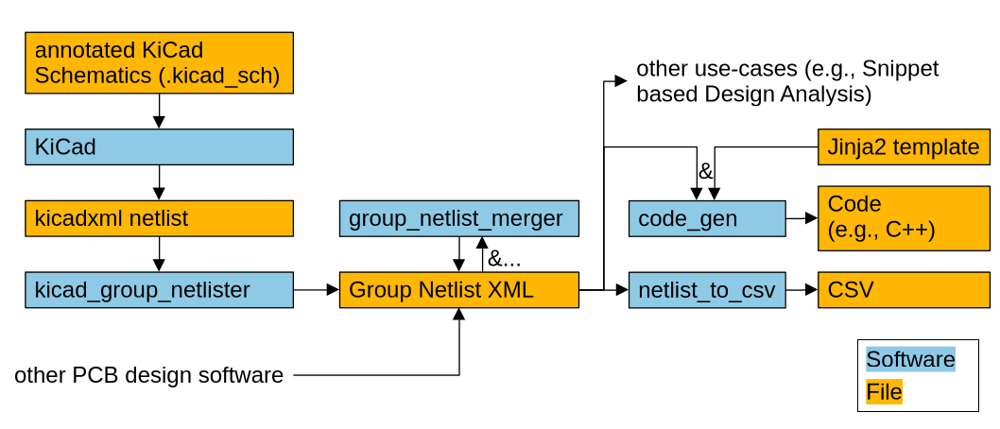
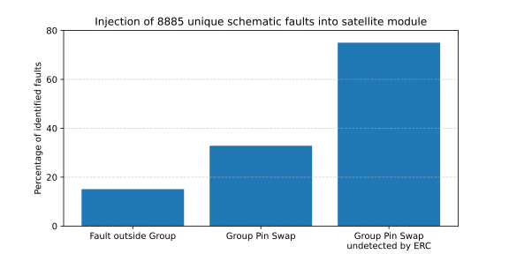

Christopher Besch, Janis S. Häseker, Hassan Nassar, Norbert Toth, Jörg Henkel • 2nd
October 2026
Automating Firmware Generation from Schematics for Microcontroller based Designs
PLUTO's Power Conditioning and Distribution Unit (PCDU)
- PCDUs similar between satellites
- Custom hardware/firmware
- Snippet based hardware design: design PCDUs from snippets, not individual components
- Problem: firmware development from scratch
→ laborious, hardware/firmware inconsistencies
Example ADC Snippet

- Idea: generate firmware based on data in schematics
- Simple example:
pindefinition.h - Many details in schematic irrelevant
→ abstract to Group - Group similar to Snippet but for firmware generation
Example Group Netlist

- Abstraction of entire schematics: what Groups are there, how do they interconnect
- Tool agnostic
- Firmware language agnostic
KiCad Annotations

- Open-Source: github.com/DLR-RY/kicad_firmware_generation
- Schematic annotations define Groups
Very easy with reused snippets
kicad_firmware_generation
kicad_firmware_generation

- A Jinja2 template per Group Type
- Generate firmware from Group Netlist and Jinja2 templates
- Key advantage: fully deterministic
→ suitable for CI-pipeline - Successfully integrated into PLUTO's PCDU development
- Remove days of manual labour
- Found hardware fault in PCDU
Systematic Fault Injection

- Inject 8885 unique faults into PCDU schematics
- Result: detected up to 75% of Group Pin swaps unfound by KiCad's Electrical Rules Checker (ERC)
- Also: benchmark shows generation runtime below 1sec
Group Netlist